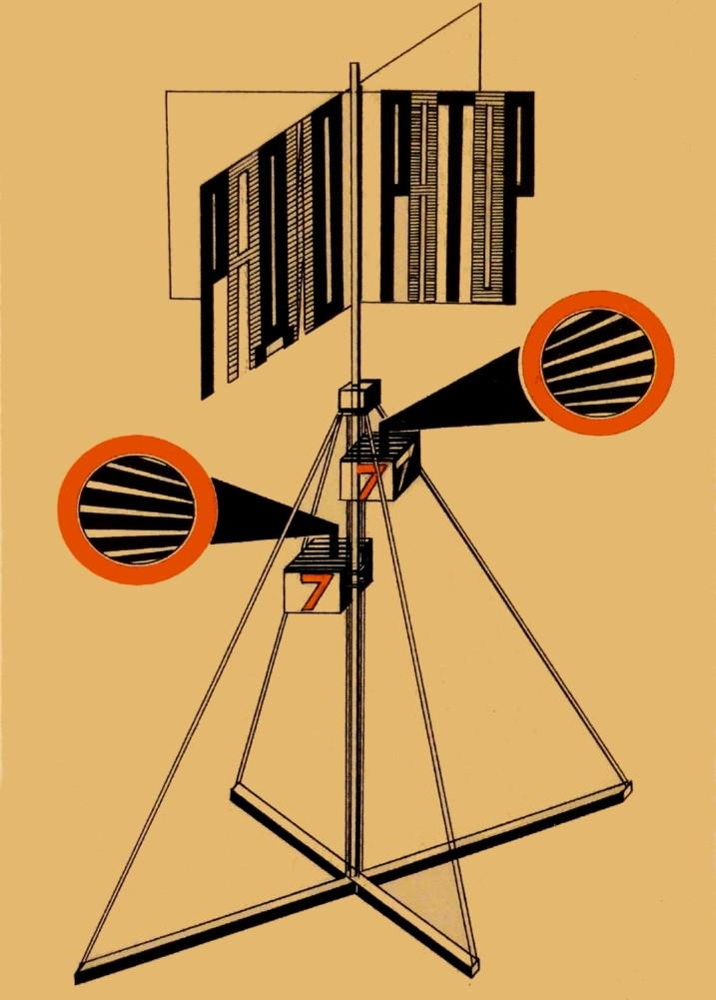

Russian constructivism
In the early 1900s, several revolutionary directions in art and design began, for later to develop into modernism, which today we know so well from the majority of the design we surround ourselves in our everyday lives. But at that time there were thoughts that art should not be reserved for the upper class. That art can be constructed, abstract, without ornaments, new and provocative – and for the people. One might argue that Russia first came up with the new modernist ideas. Russian futurism served as the basis for the new art form. It initially led to Russian constructivism and later to 'der Stijl' and 'Bauhaus' in the West. Bauhaus is today considered to be the cradle of modernism. Within constructivism this meant that, in essence, the expressive personal touch was rejected, looking away from the illustrative and hand-made expressions. One sought for pure and universal expression. ie. ornaments were removed from the design and they saw the simple geometric shapes as an objective reality in itself. It was created by the Russian avant-garde but quickly spread to the entire continent.
Constructivism influenced architecture, poetry, music, and even the consumer market and became the new everyday life in Russia of the time. In the mid-1930s the end of Russian constructivism began when Stalin ordered art to be realistic and not abstract, ie. the opposite of constructivism's foundations and ideas, which were instead replaced by socialist realism. El Lissitzky (1890 - 1941) is one of the most influential and famous designers from the period. He uses primary colours and geometric shapes in the belief that this would be the new universal visual language that would be understood by everyone.
"One of our utopian ideas is the desire to overcome the limitations of the substructure, of the earthbound. We have developed this idea in a series of proposals. [...] The idea of the conquest of the substructure, the earthbound, can be extended even further and calls for the conquest of gravity as such. It demands floating structures, a physical-dynamic architecture." (El Lissitzky (1929) in 'Basic Premises' in 'Rußland: Die Rekonstruktion der Architektur in der Sowjetunion', Moscow 1929, in Interrelationships Between the Art, in An Architecture for World Revolution, transl. Eric Dluhosch - MIT Press. Cambridge, MA: 1970)
Lissitzky saw the square as the source of all creative unfolding. He is especially known for his famous propaganda poster: "Beat the Whites with the Red Wedge" where a red triangle, symbolizing the Communist rebel movements, pierces a white circle that would symbolize the Bolsheviks. El Lissitzky - Beat the Whites with the Red Wedge, 1919A poster that would encourage the people to revolution against the ruling regime. A revolution that came later, that today we denote 'The Russian Revolution'. Lissitzky later travelled to the West, where he moved the constructivist ideals into the art group 'De Stijl'.

Alexander Rodchenko (1891-1956) is another famous artist in Russian constructivism. He started his career painting, then he worked with graphic design, and later he worked with the photograph. His photographs were socially engaged and innovative. He often shot his photos from an unusual angle – high above or below to shock the viewer. He wrote:
"One has to take several different shots of a subject, from different points of view and in different situations, as if one examined it in the round rather than looked through the same key-hole again and again."
In his work on graphic design, he sought the unambiguous universal form. His work is characterized by its dynamics and energy. Gustav Klutsis (1895 – 1938) is claimed to together with Hannah Höch, Raoul Hausmann and El Lissitzky to have created the subgenre 'Political photomontage'. A subgenre that originated in 1918. The ongoing theme in his works is propaganda and revolution. His first remarkable piece of work was a series of removable kiosks that were installed on the streets of Moscow in 1922. The kiosks were equipped with radio speakers, screens showing movies, and newspapers. The installation should mark the 5th anniversary of the Russian Revolution.

Design guidelines
Typefaces
The typefaces of Russian constructivism are typically geometric, clean and straight forms. ie. within the classification, it will typically be a sans serif: no feet, ornaments or swung curves and no contrasts in the line, which means that the line has the same thickness throughout the letter. Headings can be crooked in an often diagonal expression. One sought for a universal and pure expression, where all ornaments were removed.
Colours
Clean colours - and especially the primary colours - were to be preferred. In Russian constructivism, we especially see the red colours which became a symbol of the people's revolution. In addition, black and white, where the white is not a pure white but a cracked white, due to the fact that it did not print the white colour but let the paper shine through. The paper was not bleached white as we know it today but was more like a cracked white we know today from, for example, natural paper. There were often only two colours in a design used together with the black and chapped white.
Layout
Strong graphic layout, simple and powerful in their expression. The layout can be both static in its structure ie. almost symmetrical or have dynamic and diagonal compositions. Sharp and geometric shapes characterise the design. Illustrations are not used in Russian constructivism, but on the other hand, photographs are used as a collage element. Posters often have strong messages. The street artist Shepard Fairey and the band Franz Ferdinand are some of the contemporary artists who have clear and direct references to Russian Constructivism in their visual arts. But the term in today's context receives a different content and message than the highly propagandist and revolutionary message it had at that time of its origin.